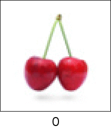

I am interested in ergodic theory and dynamical systems, specifically, symbolic dynamics and related areas of harmonic analysis, statistical physics and probability.
Arnold's Cat Map on a Cherry (Wikipedia)
Publications and Online Preprints
Predictive Sets with Benjamin Weiss.
Accepted in Stochastics and Dynamics (2020).
[arXiv] [Journal]
Mixing properties of colorings of the ℤd lattice with Noga Alon, Raimundo Briceño, Alexander Magazinov and Yinon Spinka.
Accepted in Combinatorics, Probability & Computing, 2020.
[arXiv] [Journal]
Borel subsystems and ergodic universality for compact ℤd-systems via specification and beyond
with Tom Meyerovitch.
Accepted in Proc. London Math. Soc., (2021).
[arXiv] [Journal]
Delocalization of uniform graph homomorphisms from ℤ2 to ℤ with Ron Peled, Scott Sheffield and Martin Tassy. Accepted in Communications in Mathemathematical Physics, (2021). [arXiv] [Journal]
Kirszbraun-type Theorems For Graphs with Igor Pak and Martin Tassy. Accepted in J. Combin. Theory Ser. B (2018). [ arXiv ] [Journal]
Rational ergodicity of Step function Skew Products with Jon Aaronson and Michael Bromberg. Accepted in J. Mod. Dyn. (2017). [ arXiv ] [Journal]
Mixing Properties for Hom-Shifts and the Distance between Walks on Associated Graphs
with Brian Marcus. Accepted in Pacific J. Math. (2017). [ arXiv ] [Journal]
Four-Cycle Free Graphs, the Pivot Property and Entropy Minimality. Accepted in Ergodic Theory Dynam. Systems (2015).
[arXiv] [Journal]
A Generalisation of the Hammersley-Clifford Theorem. Accepted in Trans. Amer. Math. Soc. (2016).
[arXiv] [Journal]
Markov Random Fields, Markov Cocycles and the 3-coloured Chessboard with Tom Meyerovitch. Accepted in Israel J. Math. 215 (2015), 909-964.
[arXiv] [Journal]
One Dimensional Markov Random Fields, Markov Chains and Topological Markov Fields with Guangyue Han, Brian Marcus, Tom Meyerovitch and Ronnie Pavlov.
Accepted in Proc. Amer. Math. Soc. 142 (2014), 227-242.
[arXiv] [Journal]
Markov Random Fields, Gibbs States and Entropy Minimality
PhD Thesis at the University of British Columbia, 2015. [Thesis]
Undecidability in Tiling problems
Written as part of a project in a course on the theory of Computation [Essay]
Markov Random Fields and Measures with Nearest Neighbour Potentials
Msc Thesis at the University of British Columbia, 2011.
[Essay][Errata]
Selected Presentations & Videos
About Borel and almost Borel embeddings for ℤd actions
at the Group Actions Seminar in UCSD, 2021
[Link] [Video]
About Riesz sets
at the Analysis and Probability Research Group Seminar in the Indian Institute of Science, 2020.
[Link]
Universality in tilings: Some old results and some new
Conference on Algebraic and Combinatorial Invariants of Subshifts and Tilings, 2021.
[Link]
Uniqueness of clusters in percolation
at the Working Seminar in Dynamics in the University of Utah, 2020.
[Link]
Recent progress on tiling problems
at the Lunch Seminar in Dynamics, Hebrew University of Jerusalem, 2020,
[Link]
How much do you need to know to know a process?
at the Expanding Dynamics Seminar V, 2020,
[Link] [Video]
Predictive Sets
at the Expanding Dynamics Seminar III, Torun ETDS Seminar, Jagiellonian University ETDS Seminar,
Universidad Autónoma de San Luis Potosí, 2020,
[Link1] (For people without much background in ergodic theory) [Link2] (For people with some background in ergodic theory) [Video]
Domino tilings in higher dimensions
at the Massachusetts Institute of Technology, University of Fribourg, 2020
[Link]
Many questions and a few answers about hom-shifts and rectangular tiling shifts in higher dimensions.
In the “Symbolic Dynamical Systems" workshop in CMO, Mexico, 2019.
[Link]
Modelling Processes on the ℤd lattice
at the Bar Ilan University and the Meeting on Infinite Ergodic Theory & Related Fields, 2018.
[Link 1]
[Link 2]
Irrational rotations, random affine transformations and the central limit theorem
at the University of California in Los Angeles, the Weizmann Institute, Technion Institute of
Technology, Tata Institute of Fundamental Research in Mumbai, Indian Institute of Technology
in Mumbai, 2017.
[Link 1]
[Link 2]
Some Strange Universality Results for Hom-Shifts
at the Bangalore Probability Seminar, IISc, 2016.
[Link]
Four Talks on Hom-Shifts
at the Transversal Aspects of Tilings, Oléron, 2016.
[1],[2],
[3] and [4]
An Introduction to Hom-Shifts
at the Workshop on Dynamical Systems and Related Topics in the University of Maryland, College Park, 2016.
[Link]
Distance between Walks on Graphs
at the Dartmouth College, the University of Denver, the University of Kansas and the Wright University, 2016.
[Link]
Four-cycle Free Graphs and Entropy Minimality
at the Tel Aviv University, the Tata Institute of Fundamental Research in Mumbai in 2015,
the Workshop on Symbolic Dynamics on Finitely Presented Groups in Santiago, the Pingree Park Dynamics Workshop in Denver
and the Dynamics Seminar in the University of Victoria in 2014.
[Link]
Pivot Property for Hom(ℤd, H)
at the Workshop on Combinatorics and Applications in Shanghai, April, 2015.
[Link]
Graph Foldings and Markov Random Fields
at the Indian Statistical Institute, Kolkata, August, 2014.
[Link]
Graph Foldings and Markov Random Fields
at the Combinatorics Seminar in the Dartmouth College, February, 2014.
[Link]
Markov Random Fields and the 3-coloured Chessboard
at the Symbolic Dynamics Special Session in the Mathematical Congress of the Americas, 2013.
[Link]
Markov Random Fields and the 3-coloured Chessboard
at the Symbolic Dynamics Special Session in the Mathematical Congress of the Americas, 2013.
[Link]
Markov Random Fields and the Pivot Property (with a short introduction to symbolic dynamics)
at the Indian Statistical Institute in Bangalore, July, 2013.
[Link]
Markov Random Fields, Markov Cocycles and the Pivot Property
at the Automata Theory and Symbolic Dynamics Workshop in Vancouver, 2013.
[Link]